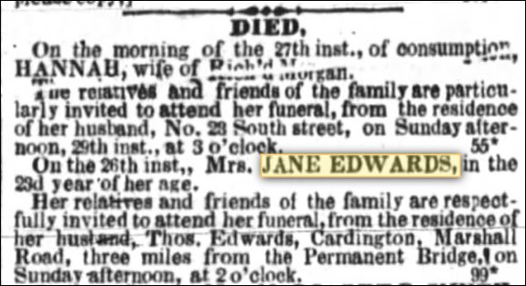
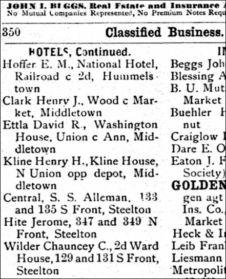
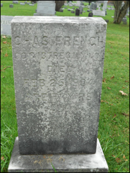

French Family Association
The Official Website of the Surname French
The Cady Library in the village of Nichols, Tioga
Co., NY.
Nichols had a population of 512 in 2010. In 1825 the population was 951.
Barneys father, Abraham French, lived in Nichols in 1840.
Chart #203, Barney Brown French, 1826
Grandson of Judge John French
Massachusetts, New York, Pennsylvania
Wisconsin
http://www.frenchfamilyassoc.com/FFA/CHARTS/Chart203/
This chart updated by Mara French on 8/8/16. Numbers in brackets [ ] show sources and refer to the bibliography at the end of this chart. An asterisk (*) shows continuation of that line.
Send any corrections or comments to this chart to marafrench@mindspring.com. Although this is not my line, I will make additions to it, and you will be notified when your data is added. Revised 2011, 2016.
Note that this research can always be improved; Ive added
to it as much as I could with this update. Hopefully other people who see this
online will research and add to it instead of just re-copying what I have here.
Contents
Cross-Reference
French Chart / DNA Groups
First 3
Generations of this Line, FFA Chart #46
Foreword
Ive researched this line just about all I can from ancestry.com and from the internet. Additions need to come from family members or from local books or historians who havent put their information online. Genealogy is an endless rewarding hobby. Although Barney Brown French is not of my line, I will continue to do research on this line as time permits. My line is FFA Chart #6.
Lineage Outline
1.1 William French, b. 1680-1690 in Ireland. Immigrated to New Hampshire. Details
2.1 John French of Londonderry, Rockingham, NH, d. 1747. Details
2.2 William French, b. 1714, m. Prudence Gavitt in 1739, d. 1761 in Montgomery, Hampden, MA. Details
3.1 John French, b. 1739 in Westerly, Washington, RI, m. Susannah Bill in 1758, d. before 1781 in Montgomery.
4.1 Prudence French, b. 1759 in Montgomery, Hampden, MA, m. Isaac Gates, d. after 1816.
4.2 Mary (Polly) French, b. 1761 in Montgomery, Hampden, MA, m. Houghton.
4.3 Judge John French, b. 1764 in Montgomery, Hampden, MA, m. Desire Bull, d. ca.
5.1 John French Jr., b. 1785 (twin) in PA, m. Lydia Williams.
5.2 Abram French, b. 1785 (twin) in PA, m. Susan B. McLean/McLain, d. before 1856.
6.1-6.12 To be added.
5.3 Cynthia French, b. 1795 (twin) in Unadilla, Otsego, NY.
5.4 Eunice French, b. 1795 (twin) in Unadilla, Otsego, NY.
5.5 Anna French, b. 1796 in Unadilla, Otsego, NY, m. Aaron Cass, d. 1860.
5.6 Benjamin French, b. 1796 in Unadilla, Otsego, NY, m1. Lucy Bates, m2. Catherine Wemple Fry, d. 1865.
6.13-6.17 To be added.
5.7 Susan French, b. 1798 in Unadilla, Otsego, NY, m. Charles Morton.
5.8 Abigail French, b. 1800 in Unadilla, Otsego, NY, m. Aaron Depuy.
5.9 Hannah French, m. William or Hiriam Reed.
5.10 Thomas French, m. Polly Bull.
5.11 Mary French, b. 1809, m. Henry Williams.
5.12 Rhinard French, unk.
4.4 Cynthia French, b. 1766 in Montgomery, Hampden, MA.
4.5 Abigail French, b. 1768 in Montgomery, Hampden, MA.
4.6 Sarah French, b. 1770 in Montgomery, Hampden, MA.
4.7 Malcolm Wheeler French, b. 17774 in Montgomery, Hampden, MA, m. Eunice Bundy, d. 1846 in Allegany, NY.
4.8 William French, b. 1776 in Montgomery, Hampden, MA, m. Mehitable Doty, d. 1852.
4.9 Anna French, b. 1778 in Montgomery, Hampden, MA.
4.10 Dudley French, b. 1780 in Montgomery, Hampden, MA.
3.2 Anna French, b. 1741 in Westerly, Washington, RI, d. 1759.
3.3 Prudence French, b. 1743 in Westerly, Washington, RI, died in NY.
3.4 William French Jr., b. 1744 in Westerly, Washington, RI, m. Elizabeth Avery, d. 1838.
4.11 To be added.
3.5 Mary French, d. 1746 in Westerly, Washington, RI, d. 1783.
3.6 James French, b. 1748 in Westerly, Washington, RI.
3.7 Hannah French, b. 1750 in Newtown, Fairfield, CT, m1. William Wheeler, m2. Silas Hubbell, d. 1797 in Unadilla, Otsego, NY.
3.8 Thankful French, b. 1756, m. James Wheeler, d. 1841.
Fourth Generation
For Judge John Frenchs siblings, see FFA Chart #46 in the Fourth Generation.
4.3* Judge John French, b. 16 May 1764 in Montgomery, Hampden, MA, m. Desire Bull ca. 1785 in PA. She was b. 1770 in Dover Plains, Dutchess County, NY, daughter of Abraham Bull and Abigail Payne. The entire Bull family was from Dover Plains, Dutchess County, NY. John lived in Montgomery, Hampden, MA, at least until 1780 when his youngest brother was born.
John first moved to Sidney, Delaware County, NY, where he met and married Desire Bull. Jonathan Carley came from Dutchess county in 1796, and settled on the banks of the river in the town of Sidney, two miles below Otego. He found one Collie and Nathan Hill there. Josiah Chase came before that time. Some of this family still remain on the farm. Laban Crandall, John French and Jerry Reid, and one Godfrey Calder, came soon after. Miss Abigail Reid kept the first school in that part of the town, in Mr. Calder's barn [27].
Otego is just east of Unadilla, both in Otsego County. NY. This township was organized from parts of Unadilla and of Franklin, Delaware County, in 1822, and then called Huntsville. In 1830 the name was changed to Otego. The settlement commenced soon after the Revolution. Among the first were Ransom Hunt, of Bennington, VT, Capt. Peter and Col. Elisha Bundy, Capt. Elisha Saunders, Deacon Lester Newlands, John, Michael, and Nathan Birdsall, Benjamin Edson, a soldier of the Revolution, John Blakely, Rowland Carr, John A. and Andrew Hodge, Michael and Benjamin Shepherd, Sylvester Goodrich, John and Nahum Smith, Thurston Brown, Benjamin Estes, James Wait and Daniel Weller.
The population in the early days was, as in Oneonta, a mixture of New Englanders and Mohawk Germans, and much rivalry and frequent fights occurred until chosen champions. John French for the "Yankees" and Peter Scraming for the "Dutch" settled it at a sawmill raising on the premises of Ransom Hunt. The Yankee was the victor, and so peace was established. At Otsdawa early settlers were Frederick Martin, Nathan Emerson, King Hathaway and Henry Sheldon.
Chronology
1764 May 16 – John was born in Montgomery, Hampden, MA. His first sibling was born at this location in 1759; all of his 9 siblings were born in Montgomery up until 1780. He moved to NY sometime between then and 1785 when he married Desire Bull in NY.
1770 – Desire Bull was born in Dover Plains, Dutchess County, NY.
1785 – Approximate time John m. Desire Bull in NY.
1790 census -- John would have been age 26. Two possible entries for John in NY are Harpersfield and Otsego:
Harpersfield, Montgomery,
NY
1 male under 16, b. after 1774
1 male over 16, b. before 1774, Judge John?
1 female, Desire
Otsego, Montgomery, NY
3 males under 16, b. after 1774, John Jr., Abram, Benjamin?
1 male over 16, b. before 1774, Judge John?
3 females, Desire, Cynthia, Eunice?
1800 census
– Unadilla, Otsego, NY
2 males under 10, b. 1790-1800, Benjamin, Rhinard or
Thomas?
2 males 10-15, b. 1785-1790, John Jr., Abram
1 male 26-44, b. 1756-1776, John
2 females under 10, b. 1790-1800, Anna, Susan
2 females 10-15, b. 1785-1790, Cynthia, Eunice
1 female 26-44, b. 1756-1776, Desire
1810 census – There are 104 families living in NY in the 1810 census with the surname French. Possible family connections:
Otego,
Otsego, NY
A. (Abram?) French, Otego, Otsego, NY, living next to W. French and J.
French.
1 male, 16-25, b. 1785-1794 – Abram French, Johns son
1 female under 10
1 female 16-25
J. French, Otego, Otsego, NY, living next to
W. French, and A. French in separate houses.
1 male under 10
2 males 10-15
1 male 26-44, born 1766-1784
3 femals under 10
1 female 10-15
1 female 26-44
J. French, Otego, Otsego, NY
3 males under 10
1 male 10-15
1 male 26-44,
3 females under 3
1 female 10-15
1 female 26-44
W. French, Otego, Otsego, NY, living next to J. and
A. French in separate houses
1 male 10-15
2 males 16-25
1 male 45+, born before 1765.
2 females 16-25
1 female 45+
Unadilla,
Otsego, NY
J. French, Unadilla, Otsego, NY – not sure of these named entries
2 males under 10, 1800-1810,
2 males 10-15, 1795-1800, Benjamin,
1 male 26-44, b. 1766-1784, John
2 females under 10, 1800-1810,
1 female 26-44, b. 1766-1784, Desire
W. French, Unadilla, Otsego, NY
1 male under 10,
1 male 26-44
1 female under 10
1 female 16-25
W. B. French, Unadilla Otsego, NY
1 male under 10
1 male 16-25
1 male 26-44
1 female 16-25
1820 census –
John French, Unadilla, Otsego, NY
1 male 10-15
1 male 16-18
1 male 18-25
1 male 45+, born before 1775, John French
1 female 10-15
1 female 45+, Desire Bull
1830 census
– John French, Unadilla, Otsego, NY, living next to his son, John Jr.
1 male 5-9
1 male 20-29
1 male 60-69, John French
1 female 20-29
1 female 30-39
1 female 60-69, Desire Bull
1840 census
– John and Desire moved back to Desires hometown in Sidney, Delaware
County, NY, living alone without children:
1 male age 70-79, b. 1760-1780, John
1 female age 70-79, b. 1760-1780, Desire
His son John Jr. moved back with them to Sidney but in a different residence as neighbors, as he is listed age 50-59 (b. 1781-1790) and his wife age 40-49 (1791-1800).
1841-1849 –
John Sr. probably died.
1850 census -- Desire was living with her daughter Polly French Williams and Pollys husband Henry Williams and their 3 children in the 1850 census of Sidney, Delaware County, NY, age 84. Desire had moved back to the area where she was born after her husband died. At age 94 in the 1860 census, she was still living with this same family in the same location. In the 1855 census of NY, Desire is listed as the mother-in-law of Henry Williams (45), living with her daughter Mary (Polly) 46, and their children John Williams (14), George Williams (13), Adelia Williams (9), Henry Williams brother John Williams (57), Desire French (89), Daniel Snider (48), Margrate Snider (45), Oscar Snider (22), Malvina Snider (18), Almeda Snider (13), Theodore Snider (11), Luman Snider (9). Margrate Snider was probably a sister of Henry Williams.
Judge John French and Desire Bull had about 12 children between 1785-1810, many of whom were twins. John was a noted lawyer in Montgomery County, NY after the Revolutionary War. John was a tough man not afraid of a good fight and so it is written in Otsego there was a fight among the early settlers and Peter Scramling and John French were selected to fight it out. John French won [25].
Johns ancestry is continued several generations back in FFA Chart #46. See Judge John French in the Fourth Generation.
Fifth Generation
Children of John French and Desire Bull, 4.3
5.1 John French Jr., twin, b. ca. 1785 in PA, m. Lida or Lydia Williams [18] [12]. She was b. 1791-1800. John is listed in the 1800 census of Unadilla, Otsego, NY, age 10-15, but probably lived on his own by 1810. John always removed with his father.
John Jr. moved back with his father in 1840 to
Sidney, Delaware, NY, the hometown of his mother Desire Bull, but in a different
residence than his father, but as neighbors, as he is listed age 50-59 (b.
1781-1790) and his wife age 40-49 (1791-1800).
1840 census of Sidney, Delaware, NY
1 male under 5
2 males 5-9
2 males 10-14
1 male 15-19
1 male 50-59
1 female 40-49
All other census records are easy to research as he
is listed as John French Jr. Also, as he moved to Sidney, Delaware, NY, most of
his children were buried in East Sidney Cemetery and will be added as I have
time, or if someone volunteers to type up the data and email it to me at marafrench@mindspring.com : http://www.findagrave.com/cgi-bin/fg.cgi?page=gsr&GSln=French&GSiman=1&GScid=64400&.
5.2* Abram French, twin [18], b. ca. 1785 in PA (as stated by his daughters Keziah and Anne in the 1880 census) [12]. But, his daughter Annies death certificate states that her father Abraham French was born in Unadilla, Otsego, NY, and her mother Susan M. McLain was born in Little Washington, PA. However, according to the 1790 census, his father was living in Montgomery County, NY.
Abraham m. Susan B. McLean or McLain ca. 1819 most likely in PA, and he died before 1856 (he is not in the 1850 census with Susan) and was buried at his brother Dudleys farm. Susan McLain, b. 18 Aug 1796, the dau. of Peter McLain (1751-1817) and Lucy Weathersby (1764-1843), Peter was from Isle of Skye, Invernessshire, Scotland, and immigrated to North Carolina. In the 1790 census, Peter was about 40 years old; the only Peter McLain who appears in NY at that time lived in New York City Dock Ward, NY, NY, with a family of 7, and spelled his name McLean, and lived next to John Baldsin and Isaac Moses. .
Susan McLain French died in Philadelphia, PA on 19 Nov 1872, per the French Bible. Abram is listed in the 1800 census of Unadilla, Otsego, NY, age 10-15. Abraham d. 1855.

1810 census
A. (Abram?) French, Otego, Otsego, NY
1 male, 16-25, b. 1785-1794 – Possibly Abram French
1 female under 10
1 female 16-25
1820 census -- an Abraham French living in Unadilla, Otsego Co., NY, aged over 25 (born before 1795) and his wife aged under 25 (born after 1795) and 1 male child under 10 (born 1810-1820). One of his neighbors is Henry M. French, and another neighbor is Joshua Burdick.
1830 census -- Abraham was born between 1780 and 1790 and his wife was born between 1790 and 1800.
1830 Land
Records:
French, Abraham
Township: Nichols
County: Tioga
State: New York
Year: 1840
Roll: M704_344
Page: 48
Image: 96
males 1-0-1-0-0-0-1
females 1-2-0-1-0-0-1
1831-1834
-- Abraham French moved from PA to NY sometime between 1831 and 1834.
1840 census -- Nichols, Tioga Co., NY, shows Abraham with a total of 8 persons in the household: 1 male under 5, 1 male 10-14 (Barney), 1 male 50-59 (Abraham), 1 female under 5, 2 females 5-9, 1 female 15-19, 1 female 40-49 (his wife). The 1860 census shows both Albert French (b. 1856 in NY) and Ephraim French (b. 1831 in MA) living in Nichols, Tioga Co., NY. These men seem to have no connection to Abraham. In 1840 Abraham was in Nichols, Tioga Co., NY. It is very close to the PA border. A river runs through it which I think is the Susquehanna River that goes south through Middletown and then out by Maryland and the Chesapeake Bay. Many other French families lived along the Susquehanna River.
1850 census -- Susan French appears in the 1850 census of Philadelphia, age 55, born in 1795 in PA, with dau. Christiana French (19) and dau. Hannah French (16) and David Ross (28), John Edwards (26), and Charles Edwards (0).
Abraham d. 1855 at Uncle Dudleys farm in Middletown, Dauphin Co., PA. This could have been along the Swatara Creek which is a tributary to the Susquehanna River in Pennsylvania. Uncle Dudleys farm was along a river in Pennsylvania. It could have also been in Nichols, Tioga Co., NY along the Susquehanna River.
George Fisher was the founder of Middletown, and the Fisher family married into the French family, if not briefly, when Fanny Morehouse first married a Fisher. Fisher Avenue in Middletown is about 4 blocks west of the Swatara River. The Middletown Cemetery is also in the area, where some of his children and grandchildren are buried. George Fisher built his house along the Swatara River at Pineford on the high ground on its western bank in April 1752.
1850 -- Jane French Edwards mother, Susan French appears in the 1850 census of Philadelphia, age 55, born in 1795 in PA, with Christiana French (19) and Hannah French (16) and David Ross (28, b. 1822 in Ireland), John Edwards (26, b. 1824 in NY), and Charles Edwards (0, b. 1850 in PA). Christiana French was born in 1831 in PA and Hannah French was born in 1834 in NY. This indicates that Abraham French moved from PA to NY sometime between 1831 and 1834.
1870 census -- Susan French appears in Philadelphia as age 74, born in 1796, living with Annie H. French (28, b. 1842 in NY) and the Meurer family from Germany.
1872 – Susan Mclain French died.
Pineford Area along the Swatara
The whole tract was heavily timbered with fine oak, hickory, walnut, chestnut, locust, poplar, and laurel trees. His log cabin was 18 x 18 feet square and one and one-half stories high. He then built a house immediately in front, 30 x 50 feet and 2-stories high with a 12-foot wide porch on the south and east sides. A few Quaker families soon followed Fisher, and later, some Scotch and Irish traders came. The settlement grew, and a town was laid out a short distance west of his residence, encompassing 3 streets: High, Main, and Water running from east to west, and five streets from north to south: Union (the street where the hotel was located), Pine, Spruce, Race, and Vine. They became friends with the Indians, Quakers (including William Penn), and the Mennonites (who settled to the eastward). He belonged to St. Peters Lutheran Church, erected 1767 in Middletown, at 31 W. High Street; it is the oldest church edifice in the county. This information may be useful for the French family, as David Ettele (German name) or Ettla or Ettley belonged to this congregation [11]. A new larger church was built in 1878. See http://www.hmdb.org/marker.asp?marker=7167. Kierch in German means church.
David G. Ettley
On March 12th, 1814, Arnold S. Johns, Eli Rigg, Andrew Alexander, John Funk and William Foulk, trustees of the Methodist Episcopal congregation of Middletown, purchased of Philip Ettla, a lot of ground at the northern extremity of Union sSreet, containing seven hundred and thirty square yards, for sixty dollars. (This lot had been sold to Ettla, June 22nd, 1793, by Frederick Zeppernick for 3, and was part of a tract of sixty acres deeded to Zeppernick, March 5th, 1767, by George Fisher and wife.) A small frame church was erected on this lot shortly afterwards, and was dedicated in the year 1816, by Rev. John Goforth, preacher in charge of Dauphin circuit. Here the Methodists worshipped for about forty years. This was the second church edifice erected in Middletown. In 1839 the building was remodeled and improved. Rev. Curry preached the sermon at the reopening. At that time this location was not far from the centre of the town, but after the canal and railroad were constructed, that part of Middletown, which was then called Portsmouth, began to grow, and the larger part of the members residing in that vicinity, in 1851, the cornerstone of a new church edifice was laid on Ann street above Catherine.
5.3 Cynthia French,
twin, b. ca. 1795 in Unadilla, Otsego, NY, m. Matheson [18], or m. Charles
Bills [12].
5.4 Eunice French,
twin, b. ca. 1795 in Unadilla, Otsego, NY, m. Josiah Cass, b. 26 Sep 1786, the
son of Aaron Cass and Ruth Bull, and had 6 children [12]. Josiah was born in
Kent, Litchfield, CT, 26 Sep 1786. Eunice and Josiah
had children Moses, Caroline, John, Cynthia, Abram, and Marcus. Josiah fought
at Lundys Lane during the War of 1812. Josiah d. about 1826
in Watkins Glen, Schuyler, NY. For more on this family, see A
Biographical Record of Schuyler County, NJ, p. 383.
5.5 Anna or Annie French, b. Jan 1796 in Unadilla, Otsego, NY [12], d. 18 Feb 1860 in Tioga County, NY, at 64 years of age. She m. Aaron Cass before 1822 as their daughter Ruth Ann Cass was born 11 Jan 1822 and m. Laroy Haines. Aaron Cass was b. ca. 1795 and d. Jun 1866. Anna French Cass d. 18 Feb 1860. Aaron and Anna were first cousins, being children of Ruth Bull and Desire Bull, respectively. See Cass Family Reports. Aaron bought property at Orange, Steuben, NY, on 13 July 1838. He bought property at Orange, Steuben, NY, on 18 November 1839. He bought property at Orange, Steuben, NY, on 23 March 1841, then he moved to Yuba County, CA in 1859. They had about 6 children.
5.6* Benjamin French, b. 7 Feb 1796 in Unadilla, Otsego, NY, m1. Elizabeth Lucy Bates. Lucy was born 26 Dec 1794 in New Paltz, Ulster, NY, the daughter of Reuben Bates and Abigail Bull. He m2. Catherine Wemple Fry [12] by the 1850 census. Benjamin d. 1865 in Albion, Oswego, NY. They had children Rhinard 1830, Abram 1833, John J. 1838, Abby F. 1840, and Henry L. 1843. Benjamin is listed in the 1800 census of Unadilla, Otsego, NY, age under 10. In the 1820 census, Benjamin was living in Unadilla, Otsego, NY, with a family of 5, and his wife was age 16-25 or born between 1795-1804. In the 1830 census, Benjamin and family were living in Richland, Oswego, NY, with a family of 8, and his wife was age 30-39 or born 1791-1800 which means he was married to Lucy Bates at least until 1830. In the 1840 census, Benjamin and family of 12 were living in Albion, Oswego, NY, and his wife was age 30-39 or born 1801-1810, which means by 1840 he was married to Catherine Fry. In the 1850 census, he was age 51, Catharine was age 49 (b. 1801 in NY), living with Rhinard, Abram, John J., Abby, Henry L. in Albion, Oswego, NY. In the 1860 census, Benjamin was living in Albion, Oswego, NY with his wife Catharine (59) and children Abby (20), and Henry (17).
5.7 Susan French, b. 1798 in Unadilla, Otsego, NY, m. Charles Morton [12]. They lived in the 1850 census in Owego, Tioga, NY, with their children Sarah Morton (21, b. 1829), Matilda Morton (16, b. 1834 in PA), Catharine Morton (14, b. 1836 in PA), and Thomas Morton (perhaps Charles father), age 86, b. 1764 in Vermont. Susan was 52 and Charles was 51, b. 1799 in NY.
5.8 Abigail (Abby)
French, b. 1800 in Unadilla, Otsego, NY, m. Aaron Depuy
[12]. These two individuals were cousins. Aaron was b. 1797 in NY. In the 1850 census of Richland, Oswego, NY,
Aaron and Abigail were living with their children Mary Depuy
(14) and Johnson Dupuy (9). In the 1860 census, Aaron and Abigail were
living alone in Richland, Oswego, NY. In the 1870 census of Richland, Oswego, NY, Abigail
was 70 and living with her 2 children, Johnson and Maria. In the 1855 census of New York, the French and
Depuy families were living together in Albion,
Oswego, NY: Benjamin French (32, b. 1823), Julia A. French (31, b. 1824),
Louisa French (11, b. 1844), Charlotte French (10, b. 1845), Titon French (7, b. 1848), Mary E. French (5, b. 1850),
William W. French (2, b. 1853), Aaron Depuy (59, b.
1796), Abby Depuy (56, b. 1799), and Johnson Depuy (12). Abby d. 27 Aug 1871 and is buried in the
Riverside Cemetery in Pulaski, Oswego, NY, age 75. Aaron predeceased Abby and
d. 27 Jan 1869, buried in the same cemetery, age 71
years and 10 months. He enlisted in Co. C, 20th Reg., on 7 Sep 1864
and was discharged for disability on 17 Jun 1865, stating he died 19 Sep 1865
from the History of Oswego County, NY page 261. Many ancestors of the Depuy family are buried in the Riverside Cemetery. From the
French family buried in this cemetery were Dighton French, b. 1848, d. 1915,
the son of Benjamin French and Julia A. Depuy, and
Charles E. French, b. 1917, d. 1979 and Henry French, d. 17 Mar 1917, and Irene
G. French, b. 1924 who was the wife of Charles E. French, and Marcellous French, b. 1854, d. 9 Mar 1926 (more about him
at www.findagrave.com), and his wife Mary
J. Blaiser French, b. 27 Jan 1860, d. 21 Jan 1946.
5.9 Hannah French,
m. William or Hiriam Reed [18] [12].
5.10 Thomas French, m. Polly Bull. Polly was born in Lewis, NY 1805 [12]. Polly was the daughter of Abraham Bull Jr. and Abigail Lake. Abraham Bull was b. 1768 in Dutchess County, NY, and married Abigail Lake before 1790 in Dover Plains, Dutchess, NY. He was the son of Abraham Bull and Abigail Payne. Thomas Frenchs father married Desire Bull; the Bull family was from Dover Plains, Dutchess, NY.
Perhaps Thomas was b. 1814 in NY, white, single, a carpenter, age 73 when he died on 28 May 1887 in Polk County, Iowa. He appears in the 1880 census of Des Moines, Polk County, Iowa, stating he was born in 1814, was single, living alone, a carpenter, and that both his parents were born in Massachusetts which is true. In the 1860 census of Des Moines, Polk County, Iowa, he states he was born in 1810 in NY, age 50, a carpenter, living with many others both male and female. Not sure if Thomas had heirs.
5.11 Mary Polly French,
b. ca. 1809 in NY, m. Henry Williams [18] [12]. Henry was b. 1809 in NY, and
both his parents were born in Rhode Island. According to a couple of census
records, she was born ca. 1809 [25]. Their first child, John J. Williams, was
b. in 1840 and they had a total of 5 children [25]. In the 1850 census of
Sidney, Delaware County, NY, Mary was 42 living with her husband Henry 41, and
their 3 children: John Williams (10), George Williams (7), and Delia Williams
(2), . . . and Pollys mother Desire French who was 84. In the 1860 census,
Desire was 94 living in the same household and in the same city. By the 1870
census in Sidney, Henry is 62 and Polly is not listed, however, she is listed
as age 71 in the 1880 census of Sidney, and states that both her parents were
born in Connecticut. Polly d. after 1880 and was buried in a small cemetery
along with Jeremiah French [25] in Sidney, Delaware County, NY. There is a Jeremiah French in the 1810 census of Owego, Tioga, NY,
who is aged over 45 (born before 1765) living with his wife of the same age and
3 sons. Ref. [28] lists Jeremiah French who d. 7 Mar
1830, age 61, is the Presbyterian yard in the village of Otego.
5.12 Reinhard or Rhinard French, scraped skin from back getting out of States prison [18] [12]. He drowned in Lake Michigan. Not sure if this son was from this generation or the next.
Sixth Generation
Children of Abram French Sr. and Susan McLean, 5.2
6.1 Jennie (Jane A.) French, b. 1827 in NY, m. Thomas Edwards before 1848. Jane died probably during childbirth with her son Charles who was born in 1850.
From the Public Ledger in Philadelphia, PA, 2 Feb 1856, at a time when her father had died ca. 1855, and no one was aware that Jane had died in 1850.
Janes mother, Susan French appears in the 1850 census of Philadelphia, age 55, born in 1795 in PA, with Christiana French (19) and Hannah French (16) and David Ross (28, b. 1822 in Ireland), John Edwards (26, b. 1824 in NY), and Charles Edwards (0, b. 1850 in PA). Christiana French was born in 1831 in PA and Hannah French was born in 1834 in NY. This indicates that Abraham French moved from PA to NY sometime between 1831 and 1834.
Jane Edwards died on 26 Dec 1850 in Philadelphia, in the 23rd year of her life, born 1827. From the Public Ledge in Philadelphia, PA, dated 28 Dec 1850.

6.2 Dudley French, b. 1824 in NY [12], m. Lydia, in the 1850 census they lived in Grove, Clinton, PA, with their son Charles French, b. 1848 in PA. Lydia was born in 1824 in NY.
6.3 Nancy French, died in infancy [12].
6.4 Jefferson French, died in infancy [12].
6.5 Abraham French, Jr., d. 9 years of age [12].
6.6 daughter French, b. 1820-1825 according to the 1840 census of Tioga Co., PA (Tioga Co. is in both NY and PA). She could have been Jane French, b. 1827, d. 1899, m. John Cleckner, and is buried at the Paxtang Cemetery in Dauphin Co., PA. John and Jane Cleckner are listed in the 1850 census of Harrisburg, Dauphin Co., PA, very close to Middletown. The German spelling of Cleckner is Kleckner.
This daughter could have also been Catharine French. I just found Abraham Frank (not French) in the 1860 census, so he didn't die in 1855. He is listed as age 67, born in 1793 in PA, living in 1860 in Millersburg, Dauphin Co., PA with Catharine Frank, his daughter, age 39, born in 1821 in PA. Catharine is also listed in the 1850 census of Upper Saucon, Lehigh Co., PA as born in 1822 in PA, age 28, living with John Frank who was born in 1783, age 67, perhaps a brother to Abraham. Also living with them in 1850 are Charles Kuntz 28, Eliza Kuntz 24, and Emeline Kuntz 2. It is assumed that Eliza, b. 1826 in PA, was a daughter who married Charles and had daughter Emeline. See Ref. [14].
6.7* Barney Brown French, b. 28 Aug 1826 in PA (the 1920 census of his son Jay says his father was born in Pennsylvania, plus the 1880 census of Barneys children Nettie, Kittie, Susie, Jessie, and Charles all say he was born in PA) [12]. He was living in Tioga County, PA in 1855 (the year his father died) when he received 180 acres of land in WI from Land Office. He d. 1 Oct 1879 and was buried on 14 Oct 1879 in Plainfield, Waushara Co., WI. Sadly and tragically, both Barney and his wife, Mary Drew French, died in 1879, in Plainfield, WI.
Barney m. Mary Ann Buck Drew of PA, on 1 Oct 1856, the daughter of Rufus Baldwin Drew b. 20 Apr 1803 in Plymouth, MA, d. 18 May 1889 in Tuscarara Twp., Steuben, NY, and Mary Ann Buck. ??? confusing info here ---- and Mary Ann Buck Drew [19], b. February 6, 1836 most likely in Lawrenceville, Tioga Co., PA where her family lived in the 1830 census. Mary Ann (Buck, Drew) French d. 1 Jan 1879, same year as husband. The 1860 census lists Mary Ann Drew as b. 1838 in Tuscarora, Steuben, NY. The 1870 census says she (now married with the name Mary A. French) was b. 1836 in PA and Barney and Mary were living in Plainfield, Wausahara Co., WI, with their children Jennie, Jennette, Ballasa, and Kesiah. I cannot locate them in the 1850 census. Barney would have been listed then living alone, but I cannot find him. I would imagine Barney and Mary met and married each other after 1860 when they lived in Tioga Co., PA; in the 1860 census at the age of 22, Mary was still living with her family in Tuscarora, Steuben Co., NY. Could she have possibly met Barney there? Apparently Marys parents were from Maine where Rufus was born in 1803. Rufus was a Justice of the Peace in Addison, Steuben Co., NY in 1844.
Both Barney and Mary died and were buried at the Plainfield Cemetery in Plainfield, Waushara Co., WI. Rufus Baldwin Drew was b. in MA in 1803 and had a brother, Asa. Mary A. Buck was possibly from Rockland Co., NY. Rufus and Mary lived in Tioga Co., PA, and later between 1836 and 1839, they moved to Steuben Co., NY where Rufus was a farmer.
The Plainfield Mill in Wisconsin was erected in 1858 by Messrs. Fields, French, and Carl per website http://www.rootsweb.ancestry.com/~wiwausha/histreview.html describing the Historical Review of Plainfield. This website tells more about the Stark family. Could Messr. French have been Barney? In Steuben County, there is a city called Barney Mills.
Military Career of Barney B. French
Mustered in: 8 Oct 1864 during the Civil War
Mustered out: 8 Dec 1864
1863 Military Duty -- States he was age 37 in 1863 in Plainfield, WI, which puts his birthdate at 1826. He was a Civil War Veteran, enlistment date: 10 Aug 1864, Mustered in as Sergeant of Co. I, Wisconsin 1st Heavy Artillery Regiment on 8 Oct 1864. Mustered out on 8 Dec 1864 as per his gravestone at the Plainfield Cemetery in Plainfield, Waushara, Wisconsin. The gravestone notes say Barney was the husband of Mary A., and the father of Jeanette B. Nettie French Starks, Kitte French, Susie French, Charles Henry French, and Jesse French.
Name: Barney B French
Residence: Oak Grove, Pierce Co., Wisconsin
Enlistment Date: 08 October 1864
Distinguished Service: DISTINGUISHED SERVICE
Side Served: Union
State Served: Wisconsin
Unit Numbers: 3059 3059
Service Record: Enlisted as a Sergeant on 08 October 1864
Enlisted in Company I, 1st Heavy Artillery Regiment Wisconsin on 08 October
1864.
Discharged Company I, 1st Heavy Artillery Regiment Wisconsin on 08 December
1864
The components of the 1st Wisconsin Heavy Artillery regiment were spread throughout the South during the war. Battery A was formed December 9, 1861, and soon moved to Washington, D.C., where it served defending the capital until July 11-12, 1864. It was mustered out August 18, 1865. Battery B was organized at Milwaukee and left the state in September 1863 for Murfreesboro, Tennessee, where it remained until January 1864. Throughout the rest of the war it was in Lexington, Kentucky, until it mustered out on August 30, 1865. Battery C left Wisconsin on October 30, 1863, for Chattanooga, Tennessee, where it remained until being mustered out on September 21, 1865. Battery D was formed November 7, 1863, and ordered to New Orleans, then Washington, D.C., where it mustered out on August 18, 1865. Batteries E, F, G, H, I, K, L, and M were organized during September and October 1864 and ordered to Washington, D. C. They participated in the defenses of the city until being mustered out on June 26, 1865. The regiment lost 83 men during service. Four enlisted men were killed. Two officers and 77 enlisted men died from disease.
The above data is from http://www.wisconsinhistory.org/research.asp.
Name: Barney B. French
Company: I
Unit: 1 Wisconsin Heavy Art'y.
Rank - Induction: Private
Rank - Discharge: Sergeant
Allegiance: Union
Name: BARNEY B FRENCH
Land Office: STEVENS POINT
Sequence #: 1
Document Number: 236
Total Acres: 80
Signature: Yes
Canceled Document: No
Issue Date: December 15, 1855
Mineral Rights Reserved: No
Metes and Bounds: No
Statutory Reference: 3 Stat. 566
Multiple Warantee Names: No
Act or Treaty: April 24, 1820
Multiple Patentee Names: No
Entry Classification: Sale-Cash Entries
At Barneys and Mary Anns death, some of their children went to live with their aunt Nettie French Starks and her husband in Starks, WI. Other children went to live in relatives in Indiana, likely with their mothers siblings. The French family is related to the Starks family of Starksville, Oneida Co., WI.
In 1912 Leonard Starks purchased 10,000 acres of land from the Menasha Wooden Ware Company and the Minneapolis, St. Paul & Sault Ste. Marie Railway Co. for agricultural purposes. He rebuilt the town and gave it his name, "Starks." From 1914 on, it has been known as Starks. Mr. Starks, known as the "Potato King" became a producer as well as a buyer of potatoes. After his death, his daughter, Lelah Starks, took over the land and became one of Wisconsin's most prominent potato growers and an internationally recognized authority in the specialized field of seed potatoes. Since then, seed potatoes from the farms in Stella Township have been shipped all over the United States. In recent years, a lot of the farm land has been sold off as residential parcels, and today the Town of Stella is largely a mix of agricultural and residential property. It is a very pretty site as various crops are rotated annually, displaying an array of color throughout the entire township. Our community has a population of approximately 670 residents, creating a "big family" atmosphere in the town.
6.8 J. M. French born in 1827 who died at age 72 on 14 Oct 1899 and is buried at the Paxtang Cemetery in Dauphin Co., PA.
6.9 Christiana French, b. 1831 according to the 1840 census of Tioga Co., PA (Tioga Co. is in both NY and PA). She could have been Christiana French, b. 1831 in PA per the 1850 census of Philadelphia.
Her mother, Susan French appears in the 1850 census of Philadelphia, age 55, born in 1795 in PA, with Christiana French (19) and Hannah French (16) and David Ross (28), John Edwards (26, b. 1824), and Charles Edwards (0). This one is a high probability, because Christiana French was born in 1831 in PA and Hannah French was born in 1834 in NY.
6.10 Hannah Annie French, b. 16 Aug 1831 in Corning, Steuben, NY [12]. Annie H. m. John Stroup. She d. 19 Apr 1916 at age 84 years, 8 months, 3 days, and is buried at the Laurel Hill Cemetery, Philadelphia, PA. Only John Stroups burial is listed in this cemetery, buried in 1884, plus his sons infant son in 1924. John was b. 1828 in Philadelphia North Ward, Philadelphia, PA. In the 1850 census, John was age 22 and living with his mother, Mary Stroup age 60, in Philadelphia.
Hannahs mother, Susan French, appears in the 1870 census of Philadelphia as age 74, born in 1796, living with Annie H. French (28) and the Meurer family from Germany. The 1880 census of Middletown, Dauphin Co., PA shows Anna H. French, age 43, born ca. 1837 in PA, the aunt of the George S. Ettla (age 23, b. 1857) who is the head of the household (see below). This last census of 1880 definitely fits into this line. George S. Ettlas parents were David R. Ettla (age 56, b. 1824) and Keziah French (age 45, b. 1835), and Keziah Frenchs aunt was Annie H. French. Anna states that both her parents were born in PA and that in 1880 she was single (therefore French was not a married name), and Keziah states that both her parents were born in PA.
Her mother, Susan French appears in the 1850 census of Philadelphia, age 55, born in 1795 in PA, with Christiana French (19, b. 1831) and Hannah French (16, b. 1834) and David Ross (28), John Edwards (26), and Charles Edwards (0). This one is a high probability, because Christiana French was born in 1831 in PA and Hannah French was born in 1834 in NY, indicating that the family did migrate to New York. By 1840, their father, Abraham was in NY. Annie H. Stroup

6.11 Keziah French, b. 1835 (proven to be correct). According to the 1880 census of Middletown, Dauphin Co., PA, Keziah m. David R. Ettla. David was a bar keeper. Keziah b. 1835 was the aunt of Keziah b. 1869. David R. Ettla enlisted in the U.S. Civil War on 15 Sep 1862 as a Sergeant in PA. David was b. 1824 in PA.
A very important find in my research is the Ettla family, found in the gravestone above of Keziah French. The Ettla family lived in Middletown, Dauphin Co., PA in the 1880 census. Anna H. French, Keziahs younger sister, was living with them. Anna is listed as the aunt of the head of household, who is George S. Ettla, age 23, son of David R. Ettla and Keziah French. The 1880 census of Middletown, Dauphin Co., PA shows Anna H. French, age 43, born ca. 1837 in PA, the aunt of the George S. Ettla (age 23, b. 1857) who was the head of the household. This last census of 1880 definitely fits into this line. George S. Ettlas parents were David R. Ettla (age 56, b. 1824) and Keziah French (age 45, b. 1835), and George S. Ettlas aunt was Annie H. French.
George S. Ettla was a hotel keeper and his parents owned a hotel. Also listed is Georges brother Charles, age 21. Six others are living in the household in 1880: Maggie Winters, age 20, domestic; Anna Winters, age 16, domestic; Michael Barber, age 55, black, and hotel clerk born in VA; Joseph Kunkel, age 55, a plumber; James Drummond, age 40, laborer; and Edwin Zearfass, age 50, works at car shop. It is assumed that all these people lived in the hotel. Nonetheless, this census record ties the second and third generation together. Anna H. French is not listed with this family at any other time, but she is listed in the 1870 census of Philadelphia as age 28, living with Susan French, her mother, age 74, born 1896, and with the Meurer family from Germany.
George Ettele or Ettla lived on the south side of Main St. near the run [11]. The house was actually on the northeast corner of Union and High streets [11]. George Ettla attended a private school called the Orphan House between 1841 and 1847 [11]. See map of Middletown below and intersection of Union and High Streets. The Swatara Creek is to the right. Union St. and Ann St., where the Washington House was, is right next to the Pennsylvania Railroad along the Swatara Creek. St. Peters Church was at 31 W. High Street.
This Encyclopedia of Biography discusses Peter Young, born in Berks County, PA on 13 Nov 1781, and his relationship to the Ettla family:
Keziah French and her husband David R. Ettla were the proprietors of the Washington House at the corner of Union and Ann Streets in Middletown. Below is the City Directory from 1866 and also in the directory between 1882-1887. An earlier David Ettla, an ancestor of this line, immigrated to this country from Germany about 1756 and settled in Middletown, PA [10]. He was the one who acquired a lot of land and businesses that his descendants, such as Keziah French, inherited [10].

The Ettla family were natives of Germany, and this part of Pennsylvania had a large migration of Germans during the mid-1700s. The article below shows that by 1861, the Ettla family was living in Philadelphia, the city in which Keziah French Ettlas mother, Susan, died.
6.12 Charles French, b. May 1835 in NY (as per 1900 census), m. Dorcas, wrote his will on 25 Feb 1904 in NY [12]. He d. 11 Apr 1904 in Newark Valley, Tioga, NY, signed by C. E. Shaffer, Chancy French, and Jerry D. French. He is buried in the Tioga Cemetery, Owego, Tioga, NY.
1860 census in Tioga, Tioga, NY, Charles is 26, his wife Dorcas is 32, and children Orin (4), Austin (2), and Chauncey (2/12).
1862 – Civil War Muster Roll Abstracts, 1861-1900, enlistment was in 1862 in Owego, NY, separation date 6 Jun 1863.
1865 census of Tioga, Tioga, NY, Charles (28) is living with his wife Dorcas (39) and children Charles (9), Austin (6), Chancey (4), Emma (2).
1870 census of Plainfield, Portage Co., WI – or maybe he stayed in NY and PA as the younger children of this line did. In the 1870 census Charles French, b. 1832 in NY, lived in Tioga, Tioga Co., NY in 1870. There is a J. M. French born in 1827 who died at age 72 on 14 Oct 1899 and is buried at the Paxtang Cemetery in Dauphin Co., PA.
1870 census of Tioga, Tioga, NY, Chas was 38, Dorcas was 42, children Owen (15), Austin (12), Chancey (11), Emily (8), and Jeremiah (2). Emily was b. 15 Dec 1862 and d. 21 Oct 1883 and
1880 census of Newark Valley, Tioga, NY, Charles is 46 and states both his parents were born in NY, his wife Dorcas is 52, living with his children Emely (15, b. 1865 in NY), Perrie (13, b. 1867 in NY), and is buried in the Hope Cemetery, Newark Valley, Tioga County, NY. Chancey (21, b. 1859 in NY).
1895 Oct 29 – Dorcas French died and is buried in the Hope Cemetery, Newark Valley, Tioga County, NY.
1900 census of Newark Valley, Tioga, NY, Charles was 65, widowed, living with servant Sophia Safford, age 44, born Oct 1855 in NY.
1904 Feb 26 – Charles French was buried in the Hope Cemetery, Newark Valley, Tioga County, NY.

Child of Benjamin French and Elizabeth Lucy Bates, 5.6
6.13 Rhinard French, b. 1827 in NY, lived in Albion, Oswego, NY with his parents in the 1855 census. He m. Mary Ann Nogar before 1867 in Campbell, Steuben, NY, and had 4 children: Elida J. French b. 1860, John H. French b. 1862, Wallace French b. 1868, Warden French b. 1869. Rhinard lived in Campbell, Steuben, NY, from his marriage date until at least 1880. In 1905 he lived in Unadilla, Otsego, NY, and d. 18 Jan 1910 in Bradford, McKean, PA. In the 1880 census, Rhinard states that both his parents were born in NY. Rhinard states that he was 36, a farmer, born in NY, when he registered for the U.S. Civil War Draft in June 1863 in Oswego, NY, which would make his birthdate 1827. He died 18 Jan 1910 in Bradford, McKean, PA, as noted in The Steuben Courier, Bath, NY, 21 Jan 1910, page 8, and was buried at the Hope Cemetery in Campbell, Steuben, NY.
or
Rhinard L. French, b. 29 Oct 1834 in NY, d. 5 Nov 1912 in Otego, Otsego, NY, and buried in the Evergreen Cemetery. He m. Mary Ann Conklin. She was b. 13 Nov 1838, d. 25 Jan 1919, and was buried at the same cemetery. They had children or grandchildren Huyler French, b. 1 Aug 1874, d. 20 Feb 1903, and Alida Jane French, b. 27 Aug 1859, d. 4 Nov 1930.
Children of Benjamin French and Catherine Wemple Fry, 5.6
6.14 Abram French, b. 1833
6.15 John J. French, b. 1837 or 1838
6.16 Abby French, b. 1840
6.17 Henry L. French, b. 1843
Seventh Generation
Children of Barney Brown French and Mary Ann Buck Drew, 6.7
7.1 Jennie M. French, b. 1858, Plainfield, Portage Co., WI, per the 1870 census, m. Romanzo M. Douglas on 3 Sep 1876 in Waushara Co., WI [12]. Romanzo was b. ca. 1855 in Plainfield, Waushara, WI, the son of Rowena Douglas who was born in NY. Jennie d. 1944. In this 1870 census, Romanzos family lived next to several members of the Stark family. Jennie may have later married Philip Ettla who appears with Jennie M. Ettla in the 1900 census of Middletown, Dauphin Co., PA, born Dec 1862 in PA, with her 2 children, Elsie 12, and Claude H. 10. In the 1930 census of Middletown, Dauphin Co., PA, there is a Jennie Ettla at age 67, b. ca. 1863, living with her husband Phillip S. Ettle and his sister or sister-in-law Mardie Erisman, age 68.
From Stevens Point Journal, Stevens Point, Wisconsin, 4 Dec 1897, tells the story of how Jennie Douglas, age 39, succeeded in having women work for the government to print legal tender notes and cut them apart with sheers. Jennie was the first woman hired for this job. Later, she was replaced by a machine.
7.2 Jennette (Nettie) B. French, b. Dec 1859, Plainfield, Portage Co., WI, per the 1870 census [12]; she married Leonard L. Starks on 5 Oct 1878 in Waushara Co., WI, and lived in Starksville, WI and Chicago. They had one daughter M. Lelah Starks, b. 30 Mar 1882 in Plainfield, WI and d. in Rhinelander, WI on 10 Jan 1951, and was buried in the Plainfield Cemetery, Plainfield, Waushara, WI.
Jeanette B. Starks died in 1944 and was buried at the Plainfield Cemetery in Plainfield, Wauhara, WI.
The 1910 census states that both her parents were born in Pennsylvania; at this time Nettie was 50. In the 1930 census, Nettie was living with her daughter, LeLesh, age 47. Nettie d. 1944 in WI at age 85. She raised several of her siblings after both her parents died in 1879 when she was only 20 years old. When the only child between Nettie and Leonard Stark (LeLesh) died in 1951 (only 7 years after her mother), she (LeLesh) left her extensive land holdings to her French cousins with some land going to the University of Wisconsin for agricultural research [1].
Miss Lelah Starks, A Pioneer Seed Potato Grower at the University of Wisconsin, by G. H. Rieman and H. M. Darling, page 587-588, dated 1951 (unfortunately I am unable to see p. 588 without paying $35.00 which can be done by going to http://www.springerlink.com/content/d4t70v1u40136750/export-citation/. One could only predict that the French family assisted her more with this business than the Stark family did, causing her to leave her land holdings to her French cousins. In 1920 LeLesh was living with 3 of her cousins: Jay, Dudley, and William, ages 19, 18, and 16, who were attending school. These Frenches had moved to Chicago to help with the potato industry. See the Stark Family Y-DNA Project. This page also includes a history of the Stark surname. Lelah Stark endowed an Agricultural Chair at the Univ. of Wisconsin [1]. She sounds like a very unusual, interesting person, especially given the time [1]. My mother told us that she would get out of her Packard in a full length fur coat to inspect the potato fields [1].
Albert and Paul Stark owned the Stark Company Realtors in Madison, Wisconsin with the McLane family, Paul having graduated from the University of Wisconsin in Madison in 1907 – these may be descendants of this family.
The Lelah
Starks Elite Foundation Seed Potato Farm, also known as the the Lelah Stark Potato Breeding Farm or just the State Farm
is located west of Rhinelander Wisconsin on County Highway K. This farm
supplies Wisconsin growers with early generation seed potatoes on a
fee-for-service basis. All potatoes grown on the State Farm originate in tissue
culture in a laboratory on the University of Wisconsin-Madison campus. Tubers
are produced from the plantlets in greenhouses on the farm. These tubers are
then multiplied in the field at the farm. Both greenhouse grown and field-grown
tubers may be purchased. By 1990, this property had since been taken over the by the
University of Wisconsin and now is one of the best Elite and Foundation Seed
Potato Farms in the United States. It is now known as the Lelah Starks Elite Foundation Seed Potato Farm. It
produces disease-free seed stock that is sold to the Certified and Foundation
seed growers of Wisconsin. These growers in turn plant this stock in their
own seed plots.
The Lelah Starks Elite Foundation Seed Potato Farm in Rhinelander, WI 54501, 715-282-5530
In the 1880 census of Plainfield, Waushara County, Wisconsin (page 334A) there is the following family:
Stark, Leonard, merchant, age 28, born in NY, parents
each NY
Stark (French), Nettie B., wife, age 20, born WI, father b PA, mother b NY
Kittie French, sister-in-law, age 12, born WI, father
b PA, mother b NY
Susie A. French, age 10, born WI, father b PA, mother b NY
Jessie French, female, age 8, born WI, father b PA, mother b NY
Charles, age 3, born WI, father b PA, mother b NY
1910 Census:
Chicago Ward 25, Cook County, Illinois; Roll:
T624_267; Page: 5A;
Enumeration District: 1619; Image: 939. On Castlewood Terrace
Leonard Starks hd m w 59 M 31 yrs
NY NY PA wholesale merchant Potatoes
own read/write
Nettie B Starks wfe f w 50 M 31 yrs
WI PA PA read/write
M Lelah Starks dau f w 28
S. WI NY WI read/write [b. 1881]
Jay L French nephew m w 9 S MN WI WI attending school
Dudley F French nephew m w 8 S MN WI WI attending
school
William B French nephew 5 S MI WI WI attending school
Carrie Parker servant 23 S TN GA GA servant private
family read/write
Charles H French brother in law m w 34 widow children 3/3 WI NY PA
commercial traveler, potatoes, read/write
*********************************
1920 Census:
Chicago Ward 25, Cook County
(Chicago), Illinois; Roll: T625_342; Page: 3B; Enumeration District:
1454; Image: 418. on Castlewood Terrace
Leonard Starks hd m w 67 M read/write NY NY NY wholesale merchant food
products
Nettie B Starks wfe f w 59 M read/write WI PA NY
Leavh Starks dau f w 38 S
read/write WI NY WI
Jay French nephew m w 19 S attending school read/write MN WI WI
Dudley French nephew m w 18 S attending school read/write MN WI WI
William French nephew m w 16 attending school read/write MN WI WI
**********************************
Starks Family
The Starks family moved from NY to WI ca. 1856-1857; the French family moved in 1855 from NY when Barney Brown French received land there. Leonard was b. 27 Jun 1851 in NY, the son of Morgan Starks and Mary Ann Smith, and died 9 Dec 1927 and is buried at the Plainfield Cemetery in Plainfield, Waushara Co., WI. Leonard was a partner with a man who started a large produce company in WI. He married on 5 Oct 1878 in Waushara Co., WI.
Later on his family changed their name from Stark to Starks. Morgan Starks lived in Pamelia and Rutland, Jefferson Co., NY; then moved to Morristown, St. Lawrence Co., NY ca. 1840 and lastly to Macomb, St. Lawrence Co., NY in 1850. The French family was from Tioga Co., NY (or PA); therefore, these two families met in Wisconsin.
Mary Ann Stark Morey (1855 - 1938)
Solona Starks Richter (1860 - 1964)
Elnora Starks Schofield (1860 - 1932)
Jerome B. Starks (1866 -
1947)
Leonard Starks developed a very successful potato industry (see book article above).
In the 1870 census of Plainfield, Waushara County, Wisconsin, Leonard Stark is living with his family. Neighbors were also from the Stark family: Nelson, Louisa, Curtis, Jeanette, and Rose.
Morgan Stark, age 69, born in NY
Mary Ann Stark, age 47, born in NY
Frank Stark, age 22, born in NY
Leonard Stark, age 19, born in NY
Sarah Stark, age 17, born in NY
Mary Ann Stark, age 15, born in NY
Edwin Stark, age 12, born in WI
Elnora Stark, age 10, born in WI, twin
Solona Stark, age 10, born in WI, twin
Elma L. Stark, age 7, born in WI
Jerome Stark, age 4, born in WI
7.3* Ballasa (or Ballard) Brown French Jr., b. 1861, Plainfield, Portage Co., WI, per the 1870 census. He m. Fannie Morehouse on 7 or 24 Jan 1886 when he was age 25 [12]. Fannie was b. ca. 1859 in NY and married when she was 27 years old. She died on 2 Jun 1901 in Monroe Co., WI, when her children were all young, and when she was age 42. Barney French d. 6 Aug 1894 in Middletown, Dauphin Co., PA, age 33 years, 4 months, and 5 days, making him born 1 Apr 1861. He died only 8 years after he married. It is assumed that their 3 children, who were all orphans at a young age, were adopted.
The 1880 census of Reedsburg, Sauk Co., WI, shows a Fannie Morehouse, b. ca. 1859 in NY, the dau. of Benjamin Morehouse and Anna Morehouse both of NY; Fannie had first married a man named Fisher and had son Edwin Fisher, born ca. 1879 in WI, but already by the 1880 census when Fannie was 21, they were not living together and she was living with her parents. An Abraham Fisher is buried at the Middletown Cemetery in Middletown, Dauphin Co., PA – the stone is worn and unreadable, but could this Abraham be confused with Abraham French?
Fanny Fisher (see below) was also buried at the Middletown Cemetery in Middletown, Dauphin Co., PA; the year is worn, but it states that she was the wife of Abraham Fisher, died on Dec 11, year unknown but it looks like 1929, at age 59, 1 month and 5 days, although the stone looks like it says 79 years.
Abraham and Fannie Fisher
Fannie Fisher
The Fisher family was one of the earliest families to live in Middletown, arriving in 1759 and claiming almost 700 acres. George Fisher came before the actual conveyance of lands to him, as the date of laying out Middletown is given as 1755. A lot more research is needed on this line.
If our research is incorrect, and Fannie did not die in 1901, then there is a Fannie Fisher in the 1910 census of Brooklyn, NY, Fannie Fisher was living with a variety of 30 people, age 51. One interesting thing about this census is that everyone she lived with had a surname that began with F including Alonzo French – they were all inmates. Alonzo was b. 1832 in NY, widowed, age 78 in 1910, and an inmate. In the 1870 census, Alonzo was 38, b. 1832 in NY, living in Philadelphia, PA, with Harriet (Snodgrass) and Rusha (Rensalier) French who were husband and wife. This information is kept here only for future research issues and it is probably not at all connected to this family.
7.4 Charlotte C. French, b. 1868, d. 1937. She is not in the 1880 census. She never married. She provided genealogical information to Alan French [12].
7.5 Keziah (or Kate or Kitte or Kittie) French, b. 1869 in Plainfield, Portage Co., WI, per the 1870 census. She was buried at the Middletown Cemetery in Middletown, Dauphin Co., PA, with her brother Barney Brown French. The following photo is given for her on http://www.findagrave.com, however, we are unsure what it signifies. No dates are given. Also using the same photo in this cemetery is Florence French, which also shows in the inscription that she was 5 months old and that she may have been moved from another location.
7.6 Susan (or Susie) Ann French (named after her mother), b. 24 Feb 1870 in Waushara Co., WI [12]. She was left an orphan at the age of 8. Susan Ann French married Robert Lloyd Jack on 24 Jun 1886. He was b. 1862 in Indiana, son of Robert Morris Jack and Asentha Odle Jack. Susan and her younger brother, Jay, went to Indiana to be raised by relatives after her parents died. They had 4 children: Charles Lloyd Jack, b. 1888, Plainfield, WI, m. Elva L. C. Mueller (daughter is Mary Susan Jack, grandson is Steade Craigo); Russel Jack, b. 1890, Plainfield, WI; Rollo Jack, b. 1891, Plainfield, WI, m. ______Cuntingham; Vella Jack, b., 1893, Plainfield, WI, m. _______Maxwell. Susan Ann was the great-grandmother of Steade Craigo [1]; Steade did most of the research on this line. Eunice Leffingwell Baldwin is also a connection to this line. Susan and Robert had children Rollo who m. ___ Cuntingham, Charles who m. Elva L. C. Mueller, Vella who m. ____ Maxwell [12].
7.7* Jay Frederick French, b. 1872-74 in WI, d. 1961. Jay m1. Bessie Mullins, m2. Cary or Carrie M. Owens, b. 1879 (1910 census and 1920 census for Grand Rapids, Kent Co., MI) [12]. They married on 24 Dec 1898 in Waupapa Co., WI and had 3 children: Charles Alexander who married Janet Edna Jenkins, Barney who married Alice Wills, and Harold who married Eva [12]. The 1920 census states that Jays father was born in PA and his mother in NY. The 1930 census shows Jay and Carrie living in Hartland, Livingston Co., MI with their son, Harold J. French, 26 and with their nieces Florence (12) and Josephine (10) Owen.
7.8* Charles G. Henry French, b. 15 June 1876, m. Kate Foster, d. 1937 [12]. Charles H. French states in the 1910 census of Chicago, Cook Co., IL, that he was living with his 3 children, but that his wife and their mother is absent; they were all living with Charles sister, Nettie, whose daughter Lelah Starks willed much of her land holdings to this family. They also had a mulatto maid, Carrie Parker, b. 1887 in TN, age 23 in the 1910 census, and working as a servant. Charles m. Katie A. Foster on 14 Jun 1899 according to the 1900 census of North Branch, Chicago Co., MN. He states both his parents were born in Wisconsin. His son Jay was just born. Hazel Foster, age 7, was also listed in the household as his cousin, b. Nov 1892.
There were 2 of them – check out
http://www.findagrave.com/cgi-bin/fg.cgi?page=gr&GRid=113030023
In 1919, Charles H. French took out a US Passport in New Orleans where he worked as bookkeeper with the intention of traveling to Bluefield, Nicaragua for a permanent move. He was living at 1209 Dryades St., New Orleans, LA. He had abandoned his young family in Chicago, IL, for South America, perhaps because Americans were investing heavily in that part of South America at that time. He arrived in Bluefields, Nicaragua on 15 Aug 1919 on the ship Managua (a cargo ship) leaving from New Orleans. The ship Managua was a Nicaraguan Steam merchant ship, built in 1919. It was attacked on 16 Jun 1942 by German U-boats and sunk. He returned, as Charles d. 1829 (Ref. [1] says he d. in 1937 which is not true as per his gravestone) and is buried at the Plainfield Cemetery in Plainfield, Waushara Co., WI.
Bluefields, the oldest coastal city in Nicaragua
Charles was buried in the Coopers Plains Cemetery in Coopers Plains, Steuben, NY.
7.x Jesse French, mentioned at fathers gravestone.
Eighth Generation
Children of Barney Brown French and Fannie Morehouse, 7.3
Fannie died when her children were all young, on 2 Jun 1901 in Monroe Co., WI. Barney died in 1894. These children were orphans at a very young age. There is a Barney B. French in the 1930 census of Harrisburg, Dauphin Co., PA, b. ca. 1890, age 40, wife is Mary J. French, age 27. He is also listed in the U.S. World War II Draft Registration as Barney French, b. 5 May 1889 in Middletown, Dauphin Co., PA, registered in 1942. Could he have been a son? His draft card is signed by Mary French Nickle, 6000 43rd Road, Hyattsville, MD. Barney Frenchs race is black on the draft card. See Ref. [7] below in the Bibliography. This family could have had a slave living with them, although emancipation occurred much earlier, in Jan 1862. This line of the French family, FFA Chart #203, also lived in Middletown, Dauphin Co., PA; therefore, the coincidence of the name Barney French is just too bewildering. Sometimes an emancipated slave would take full names of people who were significant to them, relinquishing their given slave name.
8.1 Mary A. French, b. 1887 perhaps in Monroe Co., WI.
8.2 Lotto French, b. ca. 1888 perhaps in Monroe Co., WI. Two people with this criteria are listed on ancestry.com. One is Lottie French, b. 8 May 1886, died Mar 1975 in Lawrenceburg, Lawrence Co., TN. The other is Lottie French, b. 23 Jan 1888, d. Dec 1974 in North Bangor, Franklin Co., NY. Neither one could be correct, but they are listed here for further research. The 1900 census shows a Lottie French as being adopted by John and Sharlotte French, both of Canada but living in Chicago, Cook Co., IL in 1900 – this data could be completely unrelated to this line.
8.3 Giles B. French, b. ca. 1890 perhaps in Monroe Co., WI. There is a Guiles B. French listed in the 1920 census of Susquehanna, Dauphin Co., PA as b. 1886 in PA, age 34, single, living as a boarder of the Miller family. In the 1910 census of East Donegal, Lancaster Co., PA, Giles B. French is listed as born in 1890 in PA, the grandson of James (b. 1851 in PA) and Sara McKain (b. 1853 in PA). In the 1870 census, James McKain is listed as living in Marion, Centre Co., PA.
Children of Jay F. and Carrie French, 7.7
8.4* Charles Alexander French, b. 28 Sep 1899 in Waupaca Co., WI. In the 1920 census, Charles was living in Grand Rapids, Kent Co., Michigan. In the 1930 census, Charles was living in Weyauwega, Waupapa Co., WI, married to Verona M. French, with their 2 children: Robert C. French, 8, and Devota French, 6. According to the Social Security Death Index, Charles was b. 28 Sep 1899, d. May 1966 at age 66 in Fostoria, Tuscola, MI. Also living in Fostoria is a Barbara French, b. 4 Oct 1946, from 1935-1993 at 6370 N. Lapeer Rd.
8.5 Barney F. French, b. 15 Feb 1901 in Waupaca Co., WI. Cannot find him in the 1930 census. According to the Social Security Death Index, he died in Jan 1980, age 78, in Calumet City, Cook Co., IL; however, there is a Bernard French married to Mary, both born in 1901 in Chicago, IL, with children Joseph, Michael, Margaret, William, Bernard, Mabel, and Edward in the 1910 census.
8.6 Harold J. French, b. 1904 in WI. Cannot find him in the 1930 census.
Children of Charles G. H. and Katie A. (Foster) French, 7.8
8.7* Jay Leonard French, b. 18 May 1900 in North Branch, Chisago Co., MN. Jay is listed in the 1900 census of North Branch, Chisago Co., MN, when he was only 1 month old. His father is shown as Charles H. French born in Wisconsin, and his mother as Katie A. French, also born in Wisconsin. Jays mother died when all 3 sons were young. Jay registered for the WWI draft in Chicago, Cook Co., IL on 12 Sep 1918 when his father was living in Starks, Wisconsin. At that time Jay was living at 835 Castlewood in Chicago, IL. He was considered as short, slender, brown eyes, and light hair. In the 1910 census, Jay was living in Chicago, Cook Co., IL with his father and aunt Nettie B. Starks. In the 1920 census he was living in Chicago with his aunt Nettie and her family, and his 2 brothers, Dudley and William. His father had moved to New Orleans. Jay cannot be found in the 1930 census. He d. 23 Dec 1982 in Rhinelander, Oneida Co., WI per his social security record. Another record shows he d. 18 Dec 1982 in Lee Co., Florida, and is buried at the Plainfield Cemetery in Plainfield, Waushara Co., WI, in Row 1, Lot 17, with B. B. French, Mary A. French, Miss Lela Starks, Mrs. Nettie B. Starks, Jay French, and Charles French. He may have had a son named Richard French Sr. who was b. in 1926, who had a son named Richard French Jr. in 1963 and a daughter named Mary J. in 1964, all of Rhinelander, Oneida Co., WI. Jay Leonard French helped with the extensive potato industry and became wealthy after moving to Rhinelander, Oneida Co., WI.
8.8* Dudley Foster French,
Sr., b. 1 Oct 1901 in North Branch, Chisago Co., MN, m. Louise Francis
with step-daughter from the 1930 census
for Chicago, IL. The 1910 census states
that both of Dudleys parents were born in Wisconsin. In the 1920 census Dudley was living in
Chicago with his aunt Nettie, as his father had moved to New Orleans. In the 1930 census he was living in Chicago
with his wife, Louise Francis French and his step-daughter,
Phyllis French, age 9, born 1921. Dudley d. 26 May 1978 in
San Diego, CA, as stated in the Social Security Death Index. Ref. [1]
states that he had a son named after him..
8.9* William B. French, b. 1904 in MN. He also states in the 1910 census that both of his parents were born in Wisconsin. In the 1920 census he was living with his aunt Nettie as his father was living in New Orleans. In the 1930 census he was living in Chicago, Cook Co., IL and married to Loretta French. They had son William B. French b. in 1929 in Chicago, Cook Co., IL, in the 1930 census. Loretta T. French was b. 10 Mar 1909 and d. 29 Dec 1988 at age 79 in Naperville, Du Page Co., IL.
Ninth Generation
Children of Charles A. and Verona M. French, 8.4
9.1 Robert C. French, b. 16 Dec 1921 most likely in Weyauwega, Waupaca Co., WI. He d. 29 Dec 1978 at age 57. He could have married and had children by 1950 who could take the DNA test. There was an Edward Elroy French living in Weyauwega, WI in 1986, b. ca. 1968. In 1995 he lived at 1027 Riverside Dr., Apt. B, Waupaca, WI, 54981-1975, and later at 116 N. Main St., Waupaca, WI, 54981-1519 [3]. He could be the grandson of Robert.
9.2 Devota French, b. 1923 most likely in Weyauwega, Waupaca Co., WI.
Children of Jay Leonard French, 8.7
9.3* Richard Louis French Sr., b. 26 Feb 1926, was in the yearbook of the University of Wisconsin in 1950. Richard L. French Sr. is listed as b. 26 Feb 1926 living at 212 Hemlock St., Rhinelander, WI 54501-2968 in 1987. In 1993 he is listed as b. 26 Feb 1926 living at 904 River St., Rhinelander, WI 54501-2968. In 1944 Richard L. French, b. 1926, enlisted as a Private in the Air Corps. Richard L. French Sr. lives at 212 Hemlock St., Rhinelander, WI. Rhinelander is the city where his ancestors owned land for potato-growing fields. He says that Abraham French was the father of Barney Brown French. Richard m. Jean.
Richard L. French Sr. in 1950
Children of Dudley Foster Sr. and Louise (Francis) French, 9.8
9.4 Dudley Foster French Jr.
Children of William B. and Loretto French, 8.9
9.5 Betty Jean French, b. 29 May 1926 in Cook Co., IL.
9.6 Dolores French, b. 22 Jul 1927 or 30 Oct 1928 in Cook Co., IL.
9.7 William B. French, Jr., b. 31 Oct 1929 in Chicago, Cook Co., IL, d. 10 May 2008 in Albuquerque, Bernalillo Co., NM at age 78. His obituary appears in the Albuquerque Journal of 22 May 2008. The obituary mentions the name Delores who was his wife. No children are mentioned.
FRENCH -- William B. French, 78, passed away on Saturday, May 10, 2008. He was born October 31, 1929, in Chicago, IL. Bill is survived by his beloved wife, Delores. He and his wife moved to New Mexico in 1987. They had resided in South Bend, IN for many years. Cremation has taken place, no services will be held. In lieu of flowers, memorial contributions may be made in Bill's name to VistaCare Hospice, 449-3400. Arrangements are entrusted to: Daniels Family Funeral Services 7601 Wyoming Blvd. NE Albuquerque, NM 87109 (505) 821-0010
William may have had a sister or sister-in-law named Helen Lucille French, b. 31 Dec 1929, d. 17 Mar 2007, age 78, also in Albuquerque, Bernalillo Co., NM. They both were from Illinois. In 1984 she lived in Littleton, Colorado.
Tenth Generation
Children of Richard Sr. and Jean French, 9.3
10.1 Richard Louis French Jr., b. 1 Jul 1963 in Rhinelander, Oneida Co., WI, and living in 1993 at 1735 Maple Leaf Rd., Rhinelander, WI 54501 and at 2311 Spring Dr., Rhinelander, WI 54501-9544 in 1994. He now lives at 2311 Spring Dr., Rhinelander, WI. He is married to Jan.
10.2 Mary J. French, b. 1 Sep 1964, in Rhinelander, Oneida Co., WI. She m. Stephen W. DeNamur. She is the cousin of Ref. [1].
DNA Testing
Administered by Julia French Wood. For any questions regarding DNA, please email Julia at juliaFWood@aol.com.
A proven source would be for a male with the surname French
of this line to take the DNA test. It is a simple test that doesnt involve
blood. A kit is delivered to your house with special brushes for you to take cheek swabs
and the tip is injected into the tiny test tubes to be returned to the lab.
After the tests that you ordered are completed, in about 4 weeks, you will be
notified and can log in to your personal page at the company to view your
results and your DNA matches. They may match up with one of the tests shown
here: DNA for French Group 5. The FamilyTree DNA website gives a special
lower price to those with the surname French. Read about those who approve of
it: Customers
Comments and Testimonials. Julia French Woods, administrator of the French
DNA website, suggests the 37 marker test (Y-DNA37),
but if you want to start with 25, you can upgrade to a higher test at a later
date without retaking the test. Check the FFA Home
Page under DNA for more information.
Bibliography and Records
[1] Steade Craigo, Sacramento, CA in 2003, email: SRCraigo@aol.com. My cousin, Mary J. French Denamur of Rhinelander, WI, b. 1 Sep 1964, told me that Abraham French and his wife, Susan McClain or McLain are listed in the family records. I believe Marys father and brother were Richard French Sr. and Jr., respectively. Abraham French died first; Susan McClain French died later in Philadelphia, PA. I have other records where BB French said that his father was born in NY. Leonard given name is only linked to the Stark family. Stark married the eldest French child. John Sill is a distant cousin on the Drew side. Mary Buck Drew married Barney French. BTW, the Drews married into the Baldwin family prior to the marriage of Mary and Barney French. I believe that when the only child of Leonard Stark died that she left her extensive land holdings to the French cousins with some land going to the University of WI for agricultural research. From this information, it is assumed that Steades mother was a French who married a Craigo, and that his mother had a brother Richard French Sr. who had a son named Richard French Jr.; therefore, if Steade was b. in 1947, his mother may have been born ca. 1920 and therefore Richard French Sr. would have been born ca. 1920.
********
I found the hard copy of French information that my cousin Mary French sent 2003.
Abraham French, died 1855 at Uncle Dudley's in PA.
Susan McClain French, wife of Abraham, died in Philadelphia, November 29, 1872.
Their son, Barney French was born August 28, 1826, and died in Plainfield WI October 1, 1879. He married Mary Ann Drew, daughter of Rufus and Mary Ann Buck Drew, born February 6, 1836, died January 1, 1879.
Barney and Mary- married October 1, 1856; they had seven children.
Jennie M. French, born 1858, died 1944.
Jeanette B. French, born 1859, died 1944
Barney B. French, born 1861, died 1894.
Charlotte C. French, born 1868, died 1937.
Susan A. French, born 1872.
Jay F. French, born 1872, died 1961.
Charles H. French, born 1876, did 1937.
My cousin Mary is the daughter of Richard Louis French, Sr., son of Jay L. French, who was the son of Charles French and Katie Foster French, born May 16, 1900, died December 18, 1982. Charles and Katie had two other children: Dudley French, who had a son, Dudley French, Jr., and William French, who had three children: Betty Jean French, William French, Jr., and Dolores French.
There were listed in the French Family Bible four other children possibly of Barney B. French or Jay French:
Mary A. French, born 1887
Lotto French, born 1888
Jiles French, no date provided
Charles Alexander French, born 1889
Jay F. French, son of BB French, had a first wife, Bessie.....no surname provided, February 23, 1892, before he married Carrie Owens, December 24, 1898.
Susan A. French, married Robert E. Jack, June 24,
1886
Barney B. French, married Fannie Morehouse, January 24, 1886
Jeanette B. French, married Leonard Starks, October 5, 1878
Jennie M. French, married Ronanzo M. Douglas,
September 1876
Charlotte C. French no marriage information provided.
I hope that this helps.
Steade
Steade Craigo transcribed the much of this information, which was contained in two typed pages received March 4, 2015 from Alan French, grandson of Barney B. and Mary Drew French. He wrote that information was sent to his father by his Aunt Charlotte French, the daughter of Barney Brown French.
[2] Vicki Dellinger. She is related to the Drew family and has no data on the French family whatsoever.
[3] There is an Edward Elroy French, age 43 in 2011, living at 711 School St., Waupaca, WI, 715-256-9344 who could be a descendant of this line; therefore, born in 1968.
[4] Wisconsin Historical Society Vital Records website: http://www.wisconsinhistory.org/vitalrecords/index.asp.
[5] Webmaster of the Plainfield Cemetery Listing in Wisconsin, trickey@sbcglobal.net. Website: http://www.rootsweb.ancestry.com/~wiwausha/plainfieldcemetery.pdf
[6] Richard French Jr. lives in 2011 in Plainfield,
Waushara Co., WI. Check for names Richard, Ballard, and Susan.
[7] WWII Draft Registration Card, Ballard Barney French, and his race is negro. Ancestry.com gives his birth date and place as 5 May 1889 in Middletown, PA, and his residence during WWII was 1521 Chestwood St.?, Harrisburg, Dauphin Co., PA. He was 52 years old in 1942 when he filled out this form. The form shows a contact person for him as Mary French Nickle, 6000 43rd Road, Hyattsville, MD. Apparently she was working for Reading Railroad (we see that on the Monopoly Board) in Rutherford, PA. He was 5 4, 150 lbs, negro, brown eyes and black hair and complexion. This Ballard B. French is the same one as the one listed in the 1930 census of Harrisburg, Dauphin Co., PA, age 40, b. ca. 1890 in PA. He is the head of the household living with his wife Mary J. French, age 27. She was born in 1903 and is white. The strange thing about this 1930 census is that it states Ballard B. French is white. The item that matches exactly between the WWII card and the 1930 census is the city: Harrisburg, Dauphin Co., PA. In the 1920 census, Mary F. Nickle was 49, b. ca. 1871 in Maryland. Around the time of the Civil War, recently freed slaves usually did not have surnames. Sometimes they would take full names of people who were significant to them, relinquishing their given slave name.
[8] William Henry Roll, email: wbroll@alumni.sandiego.edu, surname Baldwin, email not deliverable.
[9] Gary Kelly, email: gekelly73@comcast.net, surname Baldwin, email not deliverable.
[10] The History of Dauphin County, Pennsylvania, with Genealogical Memoirs by Luther Reily Kelker, 1907.
[11] The Chronicles of Middletown, containing a compilation of facts, biographical sketches, reminiscences, anecdotes, etc. connected with The History of One of the Oldest Towns in Pennsylvania, by C. H. Hutchinson, 1906.
[12] Steade Craigo, (GG Grandson of Barney B and Mary Drew French) transcribed information, which was contained in two typed pages received March 4, 2015 from Alan French, grandson of Barney B. and Mary Drew French. He wrote that information was sent to his father by his Aunt Charlotte French, the daughter of Barney Brown French. Sent to Mara French on July 30, 2016.
[13] Those head of households listed for New York in 1790 are:
William French, Harpersfield,
Montgomery Co., New York
Samuel French, Mohawk, Montgomery Co., New York
Peter French, Plattsburgh, Clinton Co., New York
Peter French, Hampton, Washington Co., New York (FFA
Chart #11)
Peter French, Rensselaerwick, Albany Co., New York
Ruben French, Plattsburgh, Clinton Co., New York
Levi French, Wellsburgh, Clinton Co., New York
Jonathan French, Argyle, Washington Co., New York (he is from FFA Chart #6, my line)
Joseph French, Mohawk, Montgomery Co., New York
Joseph French, Washington, Dutchess Co., New
York
Joseph French, Hudson, Columbia Co., New York
Joseph French, Oyster Bay, Queens Co., New York
Joseph French, Middletown, Ulster Co., New York
John French, Otsego, Montgomery Co., New York
John French, Harpersfield, Montgomery Co., New
York
John French, Rensselaerwick, Albany Co., New York
John French, Saratoga, Albany Co., New York
John French, Hoosick, Albany Co., New York (FFA Chart
#11)
Jasper French, Whites, Montgomery Co., New York
Jeremiah French, Pawling, Dutchess Co., New York (FFA Chart #11)
Elijah French, Balls Town, Albany Co., New York
Benjamin French, Saratoga, Albany Co., New York
Benjamin French Jr., Saratoga, Albany Co., New York
David French Jr., Otsego, Montgomery Co., New York
David French Sr., Otsego, Montgomery Co., New York
David French, Cambridge, Albany Co., New York
Ebenezer French, Mohawk, Montgomery Co., New York
Abner French, Mohawk, Montgomery Co., New York
Ansil French, Rensselaerwick,
Albany Co., New York
Ashel French, Mohawk, Montgomery, New York
Those head of households listed for Pennsylvania in 1790 are below.
Alexander French, Hopewell, Newton, Tyborn, and Westpensboro,
Cumberland Co., Pennsylvania
Alexander French, Springhill, Fayette, Pennsylvania
Andrew French, Bristol, Philadelphia, Pennsylvania
Aron French, Washington, Pennsylvania
Charles French, Water Street East Side, Philadelphia, Pennsylvania
Chrisr French, Water Street East Side, Philadelphia,
Pennsylvania
Daniel French, Bedford, Pennsylvania
Danl French, Mixed township, York Co.,
Pennsylvania
Enoch French, Fannet, Hamilton, Letterkenney,
Montgomery, and Peters, Franklin Co., Pennsylvania
Eres French, Armstsrong,
Washington, Pennsylvania
James French, Bedford, Pennsylvania
Jeremiah French, Northumberland, Pennsylvania (FFA
Chart #179)
John French, Bedford, Pennsylvania
John French, Northern Liberties, Philadelphia, Pennsylvania
Jonathan French, Water Street East Side, Philadelphia, Pennsylvania
Jno French, Portion taken from Washington, Allegheny,
Pennsylvania
Robt French, Portion Taken from Washington, Allegheny
Co., Pennsylvania
Samuel French, Fannet, Hamilton, Letterkenney,
Montgomery, and Peters, Franklin Co., Pennsylvania
Wm French, Hopewell, Newton, Tyborn,
and Westpensboro, Cumberland, Pennsylvania
Wm French, Portion taken from Washington, Allegheny
Co., Pennsylvania
Wm French, Portion taken from Washington, Allegheny
Co., Pennsylvania
[14] Baptismal record for Abraham Franck: Parents Johannes Franck, Susanna; dates (birth?) 7 Apr 1793; (baptism?) 19 May 1793. Source: Salem Evangelical Lutheran Church, Killinger, Upper Paxton Twp. Dauphin PA (LDS film # 0908696, item 3) Other children born to Johannes and Susanna (same source): George b. 9 Oct 1799 (bpt: eod die???); Daniel b. 17 Dec 1801, bpt. 17 May 1802; David b. 16 October 1805 (no ent for bapt)
I just found Abraham Frank (not French) in the 1860 census, so he didn't die in 1855. He is listed as age 67, born in 1793 in PA, living in 1860 in Millersburg, Dauphin Co., PA with Catharine Frank, his daughter, age 39, born in 1821 in PA. Catharine is also listed in the 1850 census of Upper Saucon, Lehigh Co., PA as born in 1822 in PA, age 28, living with John Frank who was born in 1783, age 67, perhaps a brother to Abraham. Also living with them in 1850 are Charles Kuntz 28, Eliza Kuntz 24, and Emeline Kuntz 2. It is assumed that Eliza, b. 1826 in PA, was a daughter who married Charles and had daughter Emeline.
[15] When I talked with Richard L. French Sr., he said Abraham lived near a river or stream – he said it was an offshoot of a larger river. So when I found Keziah living in Middletown, working with her husband David R. Ettla at the Washington House Hotel in Middletown, I saw that it was very near the Swatara Creek off the Susquehanna River. Keziah was living with her aunt, Anna, who is Barney's youngest sister. I looked up the history of Middletown and found out that it was the oldest town in PA and that the Scottish-Irish people came in down the river and settled in Pineford, which is just east of the center of Middletown. The Germans and Mennonites lived elsewhere. In one census record, Anna was living with her mother Susan in Philadelphia. So all these records tie together. Then I researched the Fisher family -- Fanny Morehouse's first marriage was to a Fisher before French. George Fisher founded the town of Middletown and there is a Fisher Avenue 4 blocks west of the Swatara River.
[16] Old map of Nichols http://www.historicmapworks.com/Map/US/14980/Nichols/Tioga+County+1869/New+York/ and the river is the Susquehanna River. The map is dated 1869. I don't see any related names, do you?
[17] Middletown was founded in 1755 and was incorporated as a borough in 1828. It is the oldest incorporated community in Dauphin County and is in a rich agricultural area bordering Pennsylvania Dutch Country. In the past, it had flouring and planing mills, stove works, car shops, and shoe, hosiery, cigar, and furniture factories. In 1900, 5,608 people lived there; in 1910, 5,374; and in 1940, 7,046. The population was 9,242 at the 2000 census...The early maps of Pennsylvania show that the area of land now called Middletown was "A Susquehannock Indian Town" (1715). When Middletown was laid out in 1755, some lodges of the Conoy or Ganawese Indians were located on the ground in the area bounded by Pine, Spruce, Main, and High Streets. These two tribes were "remnants" of the once-powerful Susquehannock Nation.
The Scots-Irish were the first white settlers of the area. Not Irish by blood, but Scottish religionists of rigid Presbyterian faith who were compelled to leave Scotland or be prosecuted. These people migrated to Ireland, but as they did not want their children to be under the Irish Catholic influence for too long a time, they soon migrated to America...Middletown, the oldest town in Dauphin County, Pennsylvania, was laid out thirty years before Harrisburg, Pennsylvania and seven years before Hummelstown, Pennsylvania. Due to its location for trade, both by land and by water, the town grew rapidly for at least a century and a half. Prior to 1729, this area was a part of Chester County, Pennsylvania. In 1729, Lancaster County, Pennsylvania was formed, and on March 4, 1785, Dauphin County, Pennsylvania was formed. Middletown was a "Post Town" and so named because of its location midway between Lancaster and Carlisle, Pennsylvania, along the old Stage Coach Road laid out in 1736...After the Revolutionary War, both land and water trade revived and flourished until 1796. After that time the river trade gradually declined because of the coming of the "arks" which could safely navigate through the rapids downstream. Trade again grew when the Union Canal (Pennsylvania) and Pennsylvania Canal were completed in the 1820s. The town was an important trading center for lumber, domestic produce, grain, milling products and steel implements...The Union Canal, the Pennsylvania Canal and the Harrisburg, Portsmouth, Mount Joy and Lancaster Rail-Road all intersected in the Portsmouth section of Middletown...
[18] Middletown Markers: http://www.hmdb.org/results.asp?Town=Middletown&State=Pennsylvania
[19] Descendants of John Drew: Family
Tree Maker's Genealogy Site: Genealogy Report: Descendants of John Drew.
John Sill email: Johnsill@charter.net.
2. Rufus Baldwin2 Drew (John1) was born April 20, 1803 in Plymouth, Massachusetts, and died May 18, 1889 in Tuscarora Twp., Steuben Co., New York. He married Mary Ann Buck March 05, 1828, daughter of Anson Buck and Hester Unknown. She was born 1813 in Broome Co., New York, and died April 20, 1890 in Winchester, Randolph Co., Indiana.
Children of Rufus Drew and Mary Buck are:
|
12 |
i. |
|
Ezra Anson3 Drew, born February 02, 1844 in
Addison, New York; died March 08, 1905 in Plainfield, Wisconsin. |
|
|
13 |
ii. |
|
Adeline Drew, born 1829; died Unknown. |
|
|
14 |
iii. |
|
William Buck Drew, born July 05, 1833 in Tioga Co.,
Pennsylvania; died March 29, 1925 in Geneva, Indiana. |
|
|
15 |
iv. |
|
Mary Ann Drew, born 1836; died 1879. |
|
|
|
16 |
v. |
|
Hettie M. Drew, born June
29, 1840 in Addison Twp., Steuben Co., New York; died 1925. She married
Alexander Vorhis; died Unknown. |
|
17 |
vi. |
|
Charlotte Drew, born 1848; died Bef. May 18, 1889. |
15. Mary Ann3 Drew (Rufus Baldwin2,
John1) was born
1836, and died 1879. She married Barney
French. He died Unknown.
Children of Mary Drew and Barney French are:
|
|
47 |
i. |
|
Nettie4 French, died Unknown. She
married Unknown Stark; died Unknown. |
|
|
48 |
ii. |
|
Jennie French, died
Unknown. She married Unknown Douglas; died Unknown. |
|
|
49 |
iii. |
|
Charles French, born Abt. 1876; died Unknown. |
|
50 |
iv. |
|
Susan Ann French, born Abt. 1871; died Unknown. |
|
|
|
51 |
v. |
|
Jerry French, born Abt. 1875; died Unknown. |
|
|
52 |
vi. |
|
Ballard French, died
Unknown. |
|
|
53 |
vii. |
|
Kate French, died Unknown. |
|
|
54 |
viii. |
|
Jay French, died Unknown. |
[20] If Abraham Frenchs father was also named Abraham, he could be the one listed in the Revolutionary War (1775-1783) in New York. He is listed under Colonel Philip Van Cortland along with Abner French.
[21] Steade Craigo talked with a Barney Ballard in Texas, 817-295-4891, who says his Ballard line came from Virginia and the person doing the genealogy on the Ballard family is Bill Price, 979-345-3265.
[22] http://www.elmilne.com/ -- website of Elijah and Megan Milne. See
Index. Email: elmilne@gmail.com. Full website:
http://wc.rootsweb.com/cgi-bin/igm.cgi?op=SHOW&db=elmilne&recno=8356.
Index to Elijah and Megan Milnes Website.
[23] Rhinard L. French, b. 1835 in NY, lived in Sidney, Delaware County,, NY in 1880, m. Mary, and had children Alida, Huylar, John H. Albert, and Adelbert. See http://search.ancestry.com/cgi-bin/sse.dll?_phsrc=exO14&_phstart=successSource&usePUBJs=true&gss=angs-g&new=1&rank=1&msT=1&gsfn=Rhinard&gsfn_x=1&gsln=French&gsln_x=1&MSAV=0&cp=0&catbucket=rstp&pcat=ROOT_CATEGORY&h=1971789&db=1880usfedcen&indiv=1&ml_rpos=1,
Rhinard appears in the 1850 census of NY living in Sidney, age 15, with Ella French (53) and Jay French (25), and Thomas French (10). In the 1905 census of NY, he was living in Unadilla, Otsego, NY with his wife Mary Ann and son John H. French. In the 1875 census of NY, he spelled his name Rynard L. French, living with his wife Mary A., and Lyda Bidwell (15), John French (14), Albert (9), Adelbert (6) and William Bidwell (31). Perhaps Marys maiden name was Bidwell. In 1892 Rhinard was living in Bradford, Steuben, NY. In 1865 he was living in Campbell, Steuben, NY, as a boarder with the Hubbard family. In 1860 Rhinard was living in Albion, Oswego, NY, living with Gerold French (40), Florilla French (16), Dora R. French (13), Mary J. French (5), Charles L. French (9), and Charlotte A. French (14); he was age 29.
[24] Reinhard-French wedding in
1948 https://www.newspapers.com/clip/4908702/reinhardfrench_wedding_1948/
[25] A History of Otego by Stuart Banyar Blakely, 1907, pages 117, 150, 151.
[26] Otego History Research Center, http://www.otegohistoricalsociety.com/index.htm.
[27] Delaware County NY Genealogy and History Site, the Town of Sidney, website: http://www.dcnyhistory.org/books/munsid.html.
[28] A History of Otego, website: http://interactive.ancestry.com/16630/dvm_LocHist004351-00062-0/117?backurl=http%3a%2f%2fsearch.ancestry.com%2fcgi-bin%2fsse.dll%3fdb%3dGenealogy-glh18738121%26gss%3dsfs28_ms_db%26new%3d1%26rank%3d1%26msT%3d1%26gsln%3dFrench%26gsln_x%3d1%26MSAV%3d1%26uidh%3dnye&ssrc=&backlabel=ReturnSearchResults&rc=404,348,602,390;511,480,695,522. Good information for FFA Chart #46 and Jeremiah, Levi, William, etc.